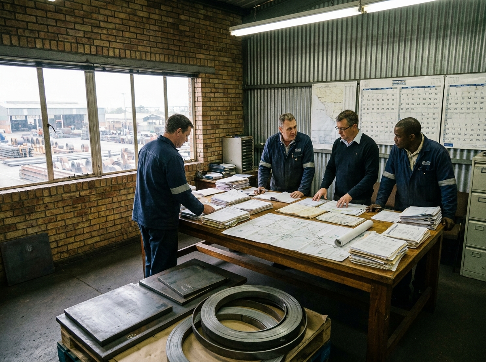
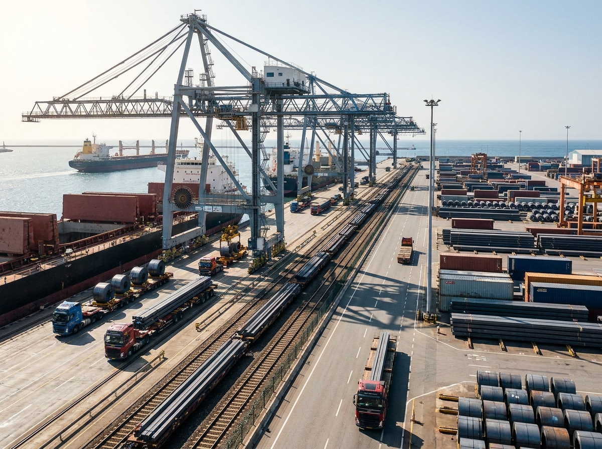

Early June 2026 has produced a more useful steel-trade picture than the broader debate often suggests. One side of the market still shows real export capability: ports remain busy, shipping capacity is deep, and Chinese cargo can still find workable outbound paths. The other side shows intensifying pressure: more trade actions, more scrutiny on destination lanes, and a global demand recovery that remains too soft to absorb excess tonnage comfortably.
进入 2026 年 6 月初后，钢铁贸易的真实图景比宽泛的市场讨论更有操作价值。一方面，出口执行能力依然存在：港口保持繁忙，航运能力仍具深度，中国货物仍能找到可行的外运路径。另一方面，压力也在加深：贸易救济措施继续增加，目的地航线审查更严，而全球需求复苏仍不足以轻松消化过剩吨位。
1) OECD's June message was not about one weak month. It was about a structural burden.
On June 4, 2026, the OECD said excess steelmaking capacity could reach 745 million tonnes by 2028. That matters because it frames today's export competition as structural rather than temporary. A supplier may still ship cargo efficiently this month, but it is doing so inside a market where too much capacity is competing for too little high-quality demand.
2026 年 6 月 4 日，OECD 表示全球炼钢过剩产能到 2028 年可能升至 7.45 亿吨。这个判断的重要性在于，它把当前的出口竞争定义为结构性压力，而不是短期波动。也就是说，供应商本月即便仍能高效出货，也是在一个“过多产能争夺有限高质量需求”的市场里运作。
For buyers, that means headline export activity should not be mistaken for comfort. Cargo can move and pricing can still feel unstable. Logistics strength may coexist with selective quoting, firmer discipline on some products, and aggressive competition on others. June buying quality therefore depends on reading the market by lane and by product, not by one overall export number.
对买家而言，这意味着不能把 headline 层面的出口活跃度误读为“市场已经轻松”。货物可以正常流动，但价格依旧可能不稳定。物流端的韧性可以与部分品类守价、部分品类激烈竞争同时出现。因此，6 月采购质量取决于按航线、按产品来读市场，而不是依赖单一总量指标。
2) Trade friction is widening even while cargo keeps moving.
The same OECD outlook showed that the number of anti-dumping and countervailing duty measures in force reached a record 395 in 2025, with 113 measures targeting China. That is a practical warning for exporters of coil, plate, pipe, and certain processed products. Even when production economics look supportive, the destination filter can still block or distort a transaction.
OECD 同时指出，2025 年全球已生效的反倾销和反补贴措施总数升至创纪录的 395 项，其中 113 项针对中国。这对卷材、板材、管材以及部分深加工产品出口商来说，是一个非常实际的警示。即使生产端经济性看起来可接受，目的地端的贸易过滤机制仍可能阻断或扭曲交易。
The report also highlighted a 300 percent increase in China's semi-finished steel exports to Southeast Asia during 2025, a signal that trade flows are adapting around current barriers. That does not automatically mean circumvention in every case, but it does mean buyers should be more deliberate about origin treatment, downstream processing assumptions, and re-export exposure when planning regional procurement.
该报告还提到，2025 年中国对东南亚的半成品钢出口增长了 300%。这说明贸易流向正在围绕现有壁垒进行适应性调整。这并不意味着每一票业务都存在规避行为，但它确实意味着，当买家规划区域采购时，需要更审慎地评估原产地处理、下游加工假设以及再出口暴露风险。

3) Port resilience remains real and should change how buyers think about risk.
Trade friction is rising, but China's shipping system is not showing collapse behavior. Xinhua reported on June 3, 2026 that China's ports handled 18.34 billion tonnes of cargo and 350 million TEUs in 2025, both higher year on year, while China's shipping volume accounted for nearly one-third of the global total. For steel exporters, that is a meaningful execution backdrop.
贸易摩擦在上升，但中国航运体系并未表现出失速迹象。新华社 2026 年 6 月 3 日报道称，2025 年中国港口完成货物吞吐量 183.4 亿吨、集装箱吞吐量 3.5 亿标箱，均同比增长；同时，中国国际航运量接近全球总量的三分之一。对钢材出口而言，这是一种很有分量的执行背景。
That distinction matters because many buyers still frame risk mainly as “Can the cargo get out?” In June, the better question is often “Can this cargo get out cleanly, into the right market, with the right documentation and no forced change later?” When ports are functioning well, the weakest point in the transaction often shifts away from the quay and toward order design and destination suitability.
这一差异非常关键，因为很多买家仍然把风险主要理解为“货能不能发出去”。而在 6 月，更准确的问题往往是：“这票货能否以干净、可执行、符合目的地要求的方式发出去，并且不会在后续被迫改单？” 当港口系统运转良好时，交易中最薄弱的环节通常会从码头本身转移到订单设计和目的地适配性。

4) Fresh import-pushback signals show why destination choice matters more now.
Recent Reuters reporting on June 1 described concern among Indian steelmakers as imports from China rose sharply, with finished steel exports to India more than doubling in April. Whether or not India is a buyer's immediate destination, the message is broader: when one receiving market becomes politically or commercially defensive, the ripple spreads into offer behavior, route selection, and pricing discipline across nearby lanes.
路透社 6 月 1 日的报道指出，随着中国钢材流入增加，印度钢厂的担忧重新升温，其中中国对印度的成品钢出口在 4 月同比翻倍以上。无论印度是否是买家的直接目的地，这个信号本身都具有更广泛意义：一旦某个接收市场在政治或商业层面转向防御，影响就会扩散到周边航线的报价行为、路线选择和价格纪律。
Buyers should read this not as a reason to freeze purchasing, but as a reason to segment purchasing. Commodity-grade cargo, specification-heavy cargo, and destination-sensitive cargo should not be negotiated under the same assumptions. The more a shipment depends on regulatory acceptance or downstream processing certainty, the less useful a superficial price comparison becomes.
买家不应把这一点理解为“暂停采购”的理由，而应把它视为“分层采购”的理由。普通商品级货盘、规格要求更重的货盘，以及对目的地政策更敏感的货盘，不应再用同一套假设去谈判。一个货盘越依赖监管接受度或下游加工确定性，表面价格比较的参考价值就越低。
5) What June buyers should do differently on real orders
First, test the destination before chasing the last dollar. Confirm whether the market is currently friendly to the specific product, origin, and customs treatment involved. Second, make documentation part of the commercial discussion from the start. Mill certificates, specification language, packing logic, and route confirmation all belong inside the order structure, not outside it.
第一，在追逐最后几美元差价之前，先验证目的地端条件。确认该市场当前是否真正接受这类产品、该原产地以及对应的海关处理方式。第二，从一开始就把单证纳入商业谈判。材质证明、规格表述、包装逻辑和路线确认都应成为订单结构的一部分，而不是事后补救的事项。
Third, separate products by execution burden. Semi-finished cargo, commodity coil, plate with certification sensitivity, pipe with tighter destination rules, and structural sections for project delivery should each be evaluated through a different risk lens. The market is no longer rewarding buyers who treat every steel order as if it travels through the same commercial channel.
第三，按执行负担对产品进行分组。半成品、普通卷材、对证书更敏感的板材、目的地规则更严格的管材，以及用于项目交付的结构型钢，都应放在不同的风险框架下评估。市场已经不再奖励那些把所有钢材订单都当作同一商业通道来处理的买家。
Takeaway
China's June 2026 steel-export environment is best understood as a split market with strong operational capacity and rising commercial friction. Ports and shipping still support execution. Trade barriers and destination scrutiny still constrain where and how value can be realized. The best buyers will not wait for one perfect macro signal. They will build cleaner order paths than the market average.
2026 年 6 月的中国钢材出口环境，更适合被理解为一个“执行能力强、商业摩擦上升”的分化市场。港口和航运仍在支持出运，贸易壁垒和目的地审查则继续限制价值实现的方式与空间。最优秀的买家不会等待一个完美的宏观信号，而是会先把订单路径设计得比市场平均水平更干净、更可执行。